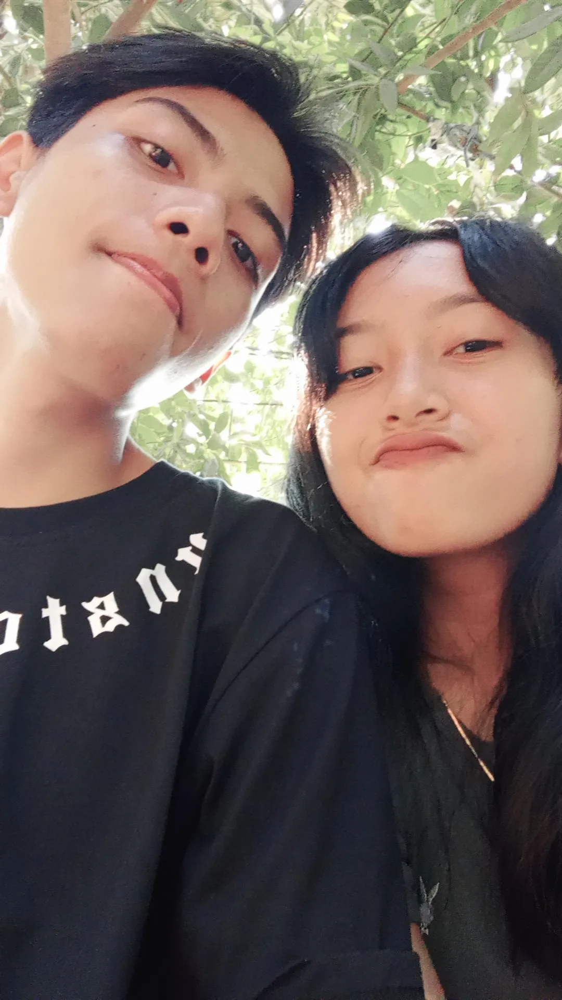
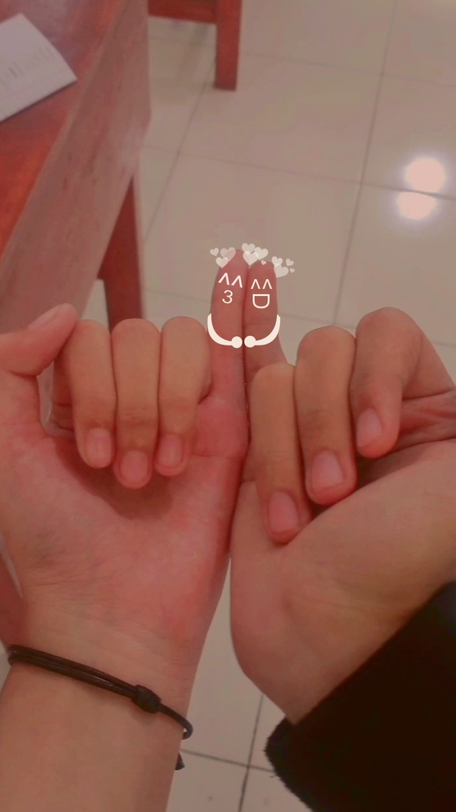
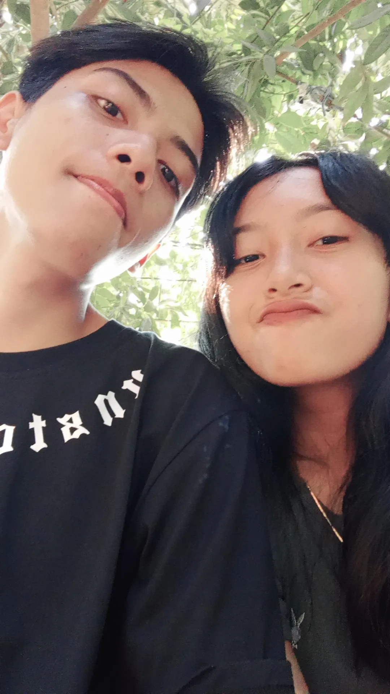
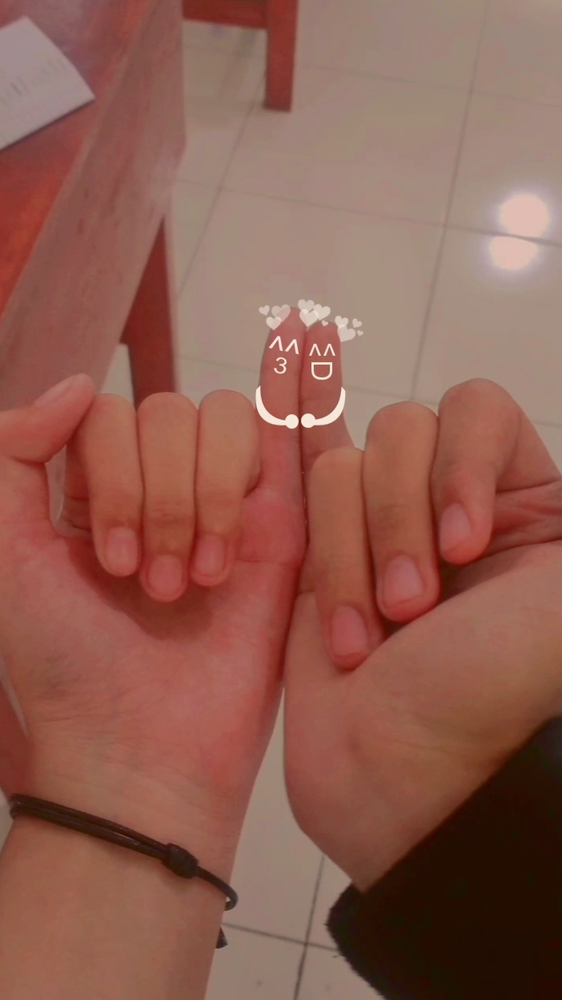

Hi sayangg tapi udah mantan wkwk!
aku gaperna lagi baik - baik tanpa kamu, hidup aku uda ga bearti banget gaada kamu, gaada lagi bahagiaa semenjak kamu pergi, setiap hari aku pura - pura baik didepan semua orang tapi apa? nyatanya aku hancurr, kamu masi jadi alasan aku buat nolak smwa cwe yang mau dapetin hati aku, aku masi sayangg banget sama kamuu cinta aku juga abiss dikamuu. jujur aku pengen ngulang semuanya lagi aku kangen semuaa tentanng kita tapi aku tau itu mustahil. aku juga gamau ngerusak kebahagiaan kamu sekarangg,aku bakalan nunggu kamu pulang. kalau kamu mau kembali lagi kembalilah apapun versi kamu aku bakalan terima, cinta aku ke kamu masi sama kaya duluu gaada yang berubaa sampai kapanpun
 


